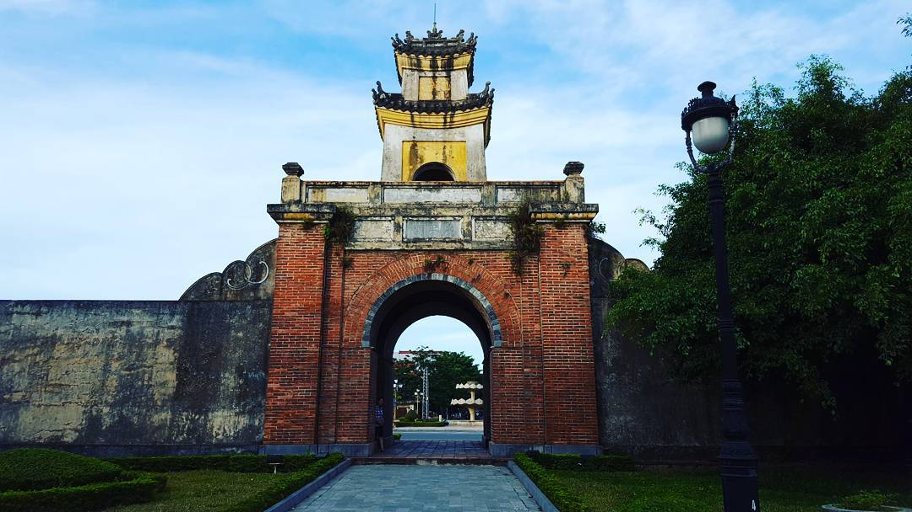
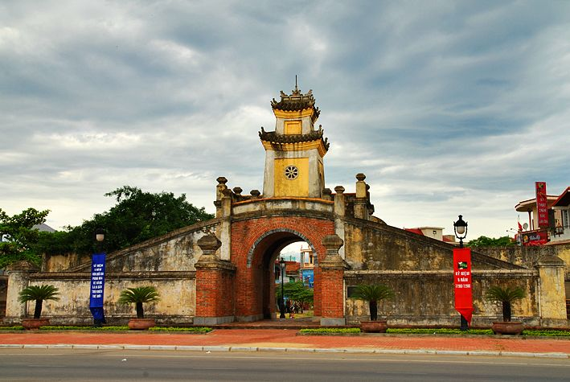
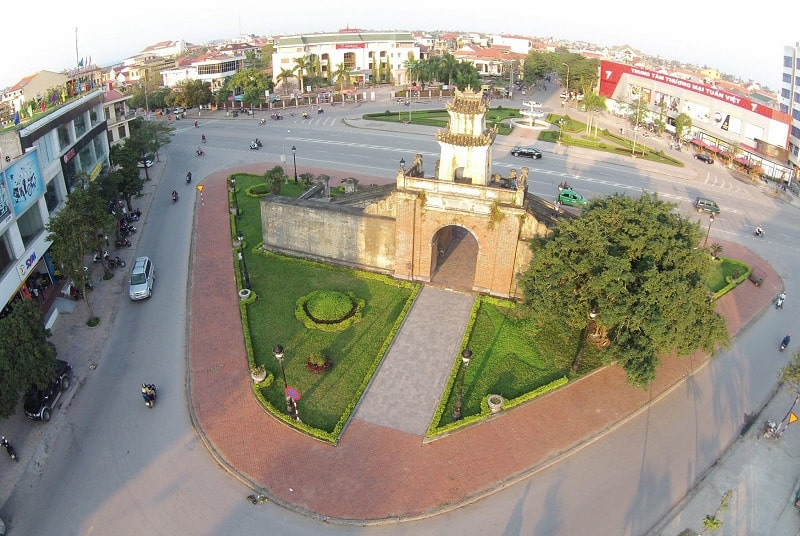
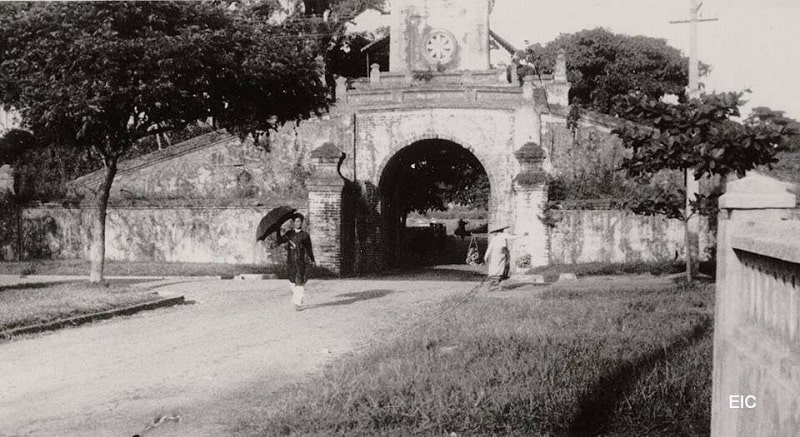

- Trang chủ
-
Tìm kiếm
-
Dịch vụ

Quảng Bình Quan
Di sản văn hoá
CẨM NANG Đồng Hới Quảng Bình Quan
Hãy bảo vệ di sản văn hoá
>999 999Quảng Bình quan (chữ Hán: 廣平關) là tên của một di tích kiến trúc quân sự tại thành phố Đồng Hới, tỉnh Quảng Bình, Việt Nam. Cùng với đồn Động Hải, đây là một luỹ quan ải áng ngữ trên đường thiên lý Bắc Nam (đường Hạ) thuộc hệ thống lũy Thầy (về sau được vua Thiệu Trị đặt tên là "Định Bắc trường thành"), được xây dựng dưới thời chúa Nguyễn Phúc Nguyên, tồn tại suốt thời Trịnh–Nguyễn phân tranh, đóng vai trò quan trọng trong việc ngăn cản quân Trịnh tiến xuống phương Nam trong 150 năm. Ngày nay, công trình chỉ còn di tích cổng quan nằm trên tuyến Quốc lộ 1.
I. Quảng Bình Quan là gì? Tọa lạc ở đâu?
Quảng Bình Quan là một thành lũy kiên cố nằm trong hệ thống Lũy Thầy, được xây năm 1639 – một trong những trọng yếu hàng đầu ở Đàng Trong. Hiện nay, đây được coi là di tích lịch sử, văn hóa ở Quảng Bình, đã được phục chế gần như nguyên dạng, trở thành minh chứng lịch sử sống động.
Quảng Bình Quan ( nguồn sưu tầm)II.Câu chuyện lịch sử về Quảng Bình Quan
Quảng Bình quan là một quan ải trọng yếu trên hệ thống Lũy Thầy, được Đào Duy Từ cho xây dựng vào năm 1631. Quảng Bình quan trấn giữ cửa sông Động Hải, tại điểm hợp lưu của hai con sông Nhật Lệ và Lệ Kỳ và là "gạch nối" của lũy Đầu Mâu – Nhật Lệ. Muốn đi từ Bắc vào Nam, phải đi qua Quảng Bình quan. Chúa Nguyễn cũng cho đắp một đồn binh nằm ở phía Bắc Quảng Bình quan, gọi là đồn Động Hải, đặt theo con sông Định Hải gần đó. Quảng Bình quan, mặt sau. Quảng Bình quan (dân gian gọi là cổng Hạ) ban đầu được đắp bằng đất, đến thời Minh Mạng được đắp mở rộng bằng gạch đá kiên cố, trên cổng dựng nhà canh, đắp thêm luỹ ngoài và hào nước. Đồn Động Hải cũng được mở rộng và xây kiên cố, trở thành thành sở của tỉnh Quảng Bình. Do biến thiên của lịch sử và thời gian, Quảng Bình quan đã bị hư hại nặng. Năm 1961, di tích Quảng Bình quan được phục chế phần cổng quan, tu sửa gần như nguyên bản (phần hào luỹ hầu như không còn dấu tích). Đến năm 1965 bị bom Mỹ đánh sập gần như hoàn toàn. Hiện nay, Quảng Bình quan đã được phục chế lại gần như nguyên bản. Di tích thành Đồng Hới gần đó cũng được phục chế 3 cổng thành và một đoạn tường thành phía Nam, cùng hào nước được bảo tồn gần như nguyên vẹn
III. Quảng Bình Quan ngày nay sau khi đã được trùng tu
Hiện di tích lịch sử Quảng Bình Quan nằm ở trung tâm khu phố Hải Đình giữa bốn bề đường: phía tây là đường Đức Ninh, phía đông là đường Mẹ Suốt dẫn ra bến sông Nhật Lệ, phía bắc là đường đi thủ đô Hà Nội và phía nam là đường vào tỉnh Thừa Thiên Huế. Quảng Bình Quan cũng có nhiều tên gọi khác nhau, có người nói đó là cổng vào Dinh Quảng Bình, có người nói đó là cổng Bình Quan.
Quảng Bình Quan ( nguồn sưu tầm)IV. Quảng Bình Quan ngày xưa
Một sự kiện quan trọng không kém ở Quảng Bình Quan, đó chính là giặc Pháp đã xử tử nhiều chiến sĩ cộng sản yêu nước để uy hiếp tinh thần của nhân dân. Thực dân Pháp dùng đồn Quảng Bình làm đồn gác để kiểm soát giao thông của chúng ta. Năm 1954, trước khi quân địch rút khỏi thành phố Đồng Hới, chúng đã cho nổ tung và phá hủy nhiều vị trí trọng yếu trong thành phố, trong đó có cầu và cửa Quảng Bình Quan. Trong cuộc chiến tranh phá hoại của đế quốc Mỹ với “Chiến dịch Linebacker II”, chúng muốn đưa miền Bắc trở về thời kỳ đồ đá. Đế quốc Mỹ đã không ngừng liên tiếp mở nhiều chiến dịch tấn công Đồng Hới từ trên không và bằng đường biển (hải quân)… Sau một thời gian ngắn, thành phố Đồng Hới bị san bằng. Chiến tranh kết thúc, ngoài việc trùng tu, tái thiết quê hương, nhiều công trình văn hóa được đầu tư, trùng tu, trong đó có Quảng Bình Quan.
Quảng Bình Quan ( nguồn sưu tầm)2024 - Trang web được thiết kế bởi Chiến Hoàng